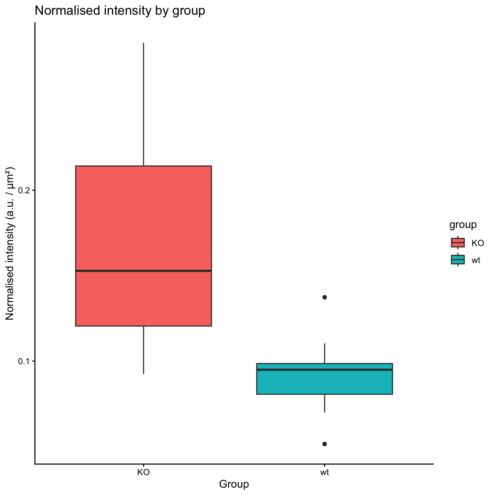

5 For loops and If/Else statements
So far, every time we needed to repeat an operation on a different subset of data, we either copy-pasted the code or used tidyverse functions like group_by. Both approaches have limits: copy-pasting is error-prone and does not scale, while group_by only works inside a tidy pipeline.
For loops and if/else statements are the building blocks of any programming language and will let you automate repetitive tasks in a much more flexible way.
5.1 For loops
The idea behind a for loop is simple: repeat a block of code for each element of a sequence.
The syntax in R is:
for (variable in sequence) {
# code to repeat
}sequenceis any vector or list:c(1, 2, 3),1:10, a vector of filenames, …variableis a name you choose; at each iteration it takes the next value of the sequence- the code inside the
{}is executed once per element
5.1.1 A first example
The simplest possible loop: print each number from 1 to 5.
[1] 1
[1] 2
[1] 3
[1] 4
[1] 5i here is just a conventional name (short for index), but you can call it whatever you want.
5.1.2 Looping over a character vector
You can loop over any vector, not just numbers. Here we loop over a vector of stop codons:
stop_codons <- c("UAG", "UAA", "UGA")
for (stop_c in stop_codons) {
print(paste("Stop codon in this iteration is:", stop_c))
Sys.sleep(2)
}[1] "Stop codon in this iteration is: UAG"
[1] "Stop codon in this iteration is: UAA"
[1] "Stop codon in this iteration is: UGA"Let’s say we have a vector of area values in mm² and we want to convert each one to µm²:
areas_mm2 <- c(0.0042, 0.0031, 0.0058, 0.0049, 0.0037)
for (area in areas_mm2) {
area_um2 <- area * 1e6
print(paste(area, "mm² =", area_um2, "µm²"))
}[1] "0.0042 mm² = 4200 µm²"
[1] "0.0031 mm² = 3100 µm²"
[1] "0.0058 mm² = 5800 µm²"
[1] "0.0049 mm² = 4900 µm²"
[1] "0.0037 mm² = 3700 µm²"5.1.3 Collecting results: the importance of initialising a container
In the example above, we just printed the results. Most of the time you want to store them. The right way to do this is to create an empty vector before the loop and fill it at each iteration.
areas_um2 <- c() # empty container
for (i in 1:length(areas_mm2)) {
areas_um2[i] <- areas_mm2[i] * 1e6
}
areas_um2[1] 4200 3100 5800 4900 3700Notice that we are now looping over the index i (from 1 to the length of the vector) rather than the values directly. This is very useful when you need to refer to the position of an element, for example to store the result in the same position of another vector.
5.1.4 Looping over a list of dataframes
In biology, a very common scenario is having multiple dataframes — one per sample, one per experiment, etc. — and wanting to apply the same operation to each of them. We can store them in a list and loop over the list.
Let’s create a small example with 3 mini-dataframes:
df1 <- data.frame(group = c("wt", "KO"), intensity = c(450, 1420), area = c(0.005, 0.0048))
df2 <- data.frame(group = c("wt", "KO"), intensity = c(510, 1380), area = c(0.0052, 0.0051))
df3 <- data.frame(group = c("wt", "KO"), intensity = c(490, 1600), area = c(0.0049, 0.0047))
sample_list <- list(df1, df2, df3)Now we loop over the list and calculate the normalised intensity for each dataframe:
for (i in 1:length(sample_list)) {
df <- sample_list[[i]] # [[]] extracts one element from a list
df$norm_intensity <- df$intensity / (df$area * 1e6)
sample_list[[i]] <- df # store the modified df back in the list
}
# Let's check the first element
sample_list[[1]] group intensity area norm_intensity
1 wt 450 0.0050 0.0900000
2 KO 1420 0.0048 0.2958333Note the [[]] double brackets: to extract a single element from a list you always use [[]], not [].
5.2 If/Else statements
An if/else statement lets you execute different code depending on whether a condition is TRUE or FALSE.
The syntax is:
if (condition) {
# code if condition is TRUE
} else {
# code if condition is FALSE
}5.2.2 else if: more than two cases
When you have more than two possible outcomes, you can chain conditions with else if:
p_value <- 0.03
if (p_value < 0.001) {
print("Highly significant (***)")
} else if (p_value < 0.01) {
print("Very significant (**)")
} else if (p_value < 0.05) {
print("Significant (*)")
} else {
print("Not significant")
}[1] "Significant (*)"R evaluates the conditions in order and executes the first block whose condition is TRUE. Once a match is found, the rest are skipped.
5.3 Putting it all together: reading files in a loop
In the next session we will do this for real with our immunofluorescence data, but let’s preview the full pattern here. The typical workflow is:
- Get the list of files to process
- Create an empty list to collect results
- Loop over the files: read each one, process it, store it in the list
- Combine all dataframes into one big dataframe with
bind_rows
# 1. Get the list of files
files <- list.files(path = "data/day-5", pattern = "*.csv", full.names = TRUE)
files[1] "data/day-5/slide_1.csv" "data/day-5/slide_2.csv" "data/day-5/slide_3.csv" "data/day-5/slide_4.csv"
[5] "data/day-5/slide_5.csv"# 2. Empty list to collect results
results_list <- list()
# 3. Loop
for (i in 1:length(files)) {
# Read the file
df <- read.csv(files[i])
# Add a column with the sample name (useful to know where each row comes from)
df$sample <- basename(files[i])
# Convert area from mm2 to um2
df$area_um2 <- df$area * 1e6
# Calculate normalised intensity
df$norm_intensity <- df$intensity / df$area_um2
# Store in the list
results_list[[i]] <- df
}
# 4. Combine into one dataframe
results_df <- bind_rows(results_list)
head(results_df) group area intensity sample area_um2 norm_intensity
1 wt 0.006371 540.43 slide_1.csv 6371 0.08482656
2 wt 0.004435 489.39 slide_1.csv 4435 0.11034724
3 KO 0.005363 901.15 slide_1.csv 5363 0.16803095
4 KO 0.005633 740.53 slide_1.csv 5633 0.13146281
5 wt 0.007018 361.11 slide_2.csv 7018 0.05145483
6 wt 0.004937 472.12 slide_2.csv 4937 0.09562892We now have a single tidy dataframe with all samples, ready for statistical analysis.
sample n
1 slide_1.csv 4
2 slide_2.csv 4
3 slide_3.csv 4
4 slide_4.csv 4
5 slide_5.csv 4# And a first look at the normalised intensity by group
ggplot(results_df) +
geom_boxplot(aes(x = group, y = norm_intensity, fill = group)) +
labs(title = "Normalised intensity by group",
y = "Normalised intensity (a.u. / µm²)",
x = "Group") +
theme_classic()